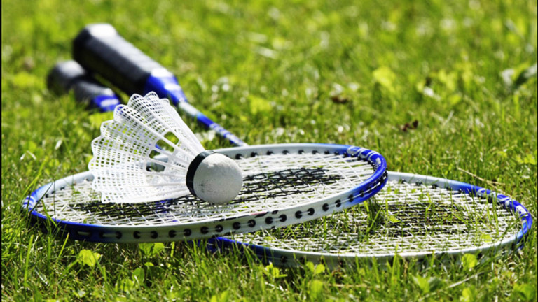

Hello everyone! My name is Garima Chand. One of my most favorite hobby is to play badminton. Badminton was one of the sport that I am inspired with. I started playing Badminton when I was seven years old.Badminton makes me enjoy and feel the real joy of life. It makes me refresh my mind from school.Badminton has always been one of the favorite sport since I started playing. It is a kind of a sport where you only need two people to play.
